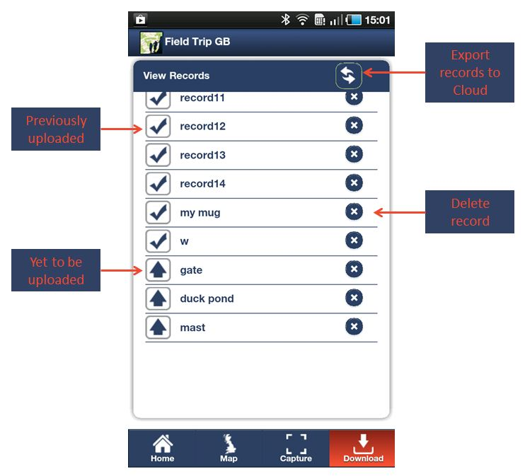
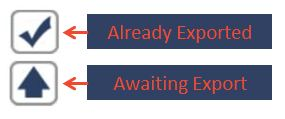

Once you have captured data you will probably want to export it so that you can view and use it on your desktop computer. To do this you will have to have an account with one of the Cloud Storage providers that Fieldtrip GB lonks to (DropBox).
First you need to log into your Cloud Storage via Fieldtrip GB. To do this, tap the Login Button on the home screen and login screen will appear. Enter your Cloud Service user details and Allow Fieldtrip GB's PCAPI to connect to your Cloud Storage(Fig 6.1).
Fig 6.1 - Allow PCAPI to connect to Cloud
When you return to the home page you will see that the login button has change to a Logout. Tap the Records Button (fig 6.2) and you should see a list of the data records you have captured (Fig 6.3).
Fig 6.2 - Records Button

Fig 6.3 - Export Records to Cloud Storage
The View Records Screen displays all your records and identifies which have been exported to your Cloud Storage and which have not (fig 6.4). You can also manage your records and delete any records that you are not happy with.

Fig 6.4 - Record Status Icons
To upload/export the records to your cloud area, tap the Synch Button. In addition, this will download any records that are in your Cloud Storage that don not exist on the device. Note - records that have previously existed on the device but have been deleted will NOT be re-downloaded.